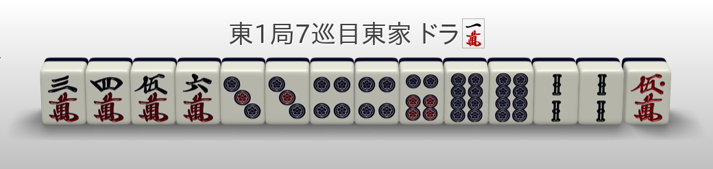

何切301练习 031~060
Q031
切6s损失2p568s进张（13枚），以及567三色- 切8m损失3456789m进张（-24枚）
- 切4p损失23456789p进张（-26枚）
- 切7s退向听
- 切2p则必须进3p或听3p
结论：切6s 切8m
- 切6s损失45678s进张（-16枚），仅比切8m的损失少8枚
- 摸3p有断平三色
Q032
- 类似 Q031，但没有三色
结论：切8s
留8s还容易丢掉断幺
Q033
- 切6s损失45678s的进张（-16枚），以及567三色
- 切4m损失23456789m的进张（-28枚）
- 切8p损失456789p的进张（-20枚）
结论：切8p
切8p还可以保证断幺，还能靠红5s
Q034
- 最后听对碰的时候，9m比7m的和率更高
结论：切7m
Q035
- 类似 Q034，但是没有役牌有断幺的可能
结论：切9m
Q036
- 切9m退向听，可能有断幺，但是不确定
- 切6p相比切7s，损失8m6p的进张
结论：切7s
- 序盘可以打9m转断幺，但第8巡的亲家不能放过摸8m直接听牌的机会。立直后有一杯口和赤的7700点，就算是剩三张的坎张听牌也即立了。
- 荣和是3番40符 7700
- 自摸是4番30符 3900 All
- 看似形状很呆板，还是有摸6m转为完全一向听的变化。
- 打6p固定三面虽然柔软，但想做出7700以上的打点还是需要不少时间的。
Q037
- 455p+44s+788s，三对拆好形
- 切5p，损失45p的进张（-3枚）
- 切8s，损失8p的进张（-2枚）（但这2枚都是断幺进张）
结论：切5p
隐约能看到四暗刻，但为此打掉6p或7s固定对子是不行的。因为眼下能看到亲满
【立直、一杯口、断幺、宝牌1】，荣和 12000，自摸 3900 All
Q038

- 5对，要考虑七对的进张
结论：切6p
Q039
- 搭子超载，拆掉一个
- 切2s损失2s7p的进张
- 切6p损失6p的进张
- 切8p损失8p的进张
保留66p，进5p改良有复合形
结论：切8p 切6p
万子的进张很多，比起完全一向听的变化，即立的概率更高。
这里想根据万子进张听牌时的听牌形来选择打掉的牌。
Q040
- 宝牌3，考虑手役和副露
- 打2p，损失12p的进张
- 打5p，损失567p的进张（都是断幺进张）
- 234三色？
- 进1346m听万字的好形（切2p、5p都一样），但假设进25m时切5p后续可以听好形
- 断幺不确
结论：打5p
- 打2p时多出来的7p进张是愚型听牌，而损失的是进25m时的好形听牌，因此和牌概率和期待值不如打5p
- 听牌不是终点，和牌才是
Q041
- 类似 Q040
- 进2356m均听到万子的好形
结论：打2p
- 中膨形和固定雀头很配
- 即使打5p最终听14p的可能性也很低（只有进4m这一种情况）。那不如保留摸6p的两面听牌机会了
Q042
- 宝牌3，速度最重要
- 切2p，损失14p的进张（-8枚）
- 大概率断幺，但是最终听牌形不好
- 切3p，损失3p的进张（-2枚）
- 进1/2/3/4/5/6s，听14p（8枚）
- 进14p，切3s听14s，或切5s听235s（都是7枚）
- 可以吃4p，其它吃碰会造成偏听
结论：切3p 切5s
- 切5s，只损失5s的进张（-2枚），和打3s的有效牌枚数相同。
- 打3p的门清期待值更高，但进红5s已经确定了满贯，打牌需要重视鸣牌效率。
- 3p23s可以碰，4p6s可以吃。3s不要吃，而要碰。让别人看到三张3s更容易引出2s。
- 切5s引挂？
Q043
- 切7p损失6p的进张
（-4枚）（-3枚），以及宝牌 - 切4s损失347s的进张（-7枚）
- 切5s损失2457s的进张（-12枚）
- 切6s损失6s的进张（-2枚）
结论：切6s 切7p
- 很想保留宝牌7p打4s或6s，但宝牌指示牌6p是瓶颈。而且就算吃了6p也到不了满贯，比较微妙。
- 进索子门清听牌的话，因为打点足够，最后还是要打掉宝牌7p。
- 甚至还有着四暗刻的机会，打宝牌7p才是最均衡的一手，期待值最大。
Q044

- 切7p损失6p的进张
（-4枚）（-3枚），以及宝牌 - 切4s损失467s的进张（-7枚）
- 切5s损失457s的进张（-8枚）
- 切6s损失56s的进张（-5枚）
结论：切6s 切7p
- 留着宝牌7p除了摸6p听牌，其他情况最后还是要打掉。
- 进宝牌指示牌6p和5s做一杯口的概率是一样的。
- 虽然宝牌成对很有魅力，但6s成为暗刻听牌更好。
Q045
- 切7p，损失67p的进张
- 切2p，损失27p的进张
- 碰2p比吃6p的概率大
结论：切7p 切6m
- 万子这边作为最终听牌形的话是个三面听，但要打掉宝牌6s。
- 如果能用上宝牌6s，就算鸣牌也是断幺宝牌3（切上）满贯，打点上升率最佳。
- 实战中虽然要看实际情况，但“就算鸣牌也确定满贯”很强力，即使有愚形听牌的可能性，也有十足追求的价值。
Q046
- 切6/7m，固定雀头，听牌进张为14p58s（7+7=14枚）
- 切5m，听牌进张为12345p45678s（15+15=30枚）
- 切3p，听牌进张为58m25p45678s（6+6+15=27枚）
- 切6s，听牌进张为58m12345p47s （6+15+6=27枚）
结论：切5m
Q047
- 切7m，听牌进张为24m58p（8+8=16枚）
- 切1m，听牌进张为346m58p （9+8=17枚），且保证断幺
结论：切1m
- 打6m进张最多，但完全没有雀头，后面会很辛苦。
- 比起打7m的两坎形，打1m的形状不论打点还是广度上都更加有利。打1m后摸346m都是断平听牌，广度和打点的平衡良好。
- 摸578m的场合，打7m和打1m更是相差悬殊。
Q048
- 切6m，听牌进张为5678p345678s（13+20=33枚）
- 切6p，听牌进张为6m58p36s（2+8+6=16枚）
- 切7p，听牌进张为45678m6p345678s（16+2+20=38枚）
- 切6s，听牌进张为45678m5678p（16+13=29枚）
结论：切7p
- 固定雀头容易做断幺或一杯口，比较有利。
- 虽说“迷茫的时候就拆亚两面”，但这次手牌中最强的部分是万子的中膨形。固定雀头最大限度活用这个形状的期待值最高。
Q049
- 切9m，听牌进张为58m2578p（6+8+7=21枚），且有断幺
- 切3p，听牌进张为47m4578p（7+7+7=21枚）
- 切7p，听牌进张为47m5869m2345p（7+12+7+7=
2133枚）
结论：切9m
- 当然打7p有效牌最多，但最差的进张6m打红5m只有立直。
- 打9m确定断幺和必定用上红5m，完全可以抵消有效牌枚数的差距。
- 摸5p更有四面听。
Q050
- 668m+446p+99s
- 切6m，有效进章为7m45p9s（12枚），改良进张为2m7p（8枚）
- 听牌大概率为坎张或双碰
- 早巡，退向听追求断幺？（✓）
结论：切9s
- 这样直线前进下去也没有役。
- 因为有三个对子，所以即使拆掉一个速度也不会变化太多。
- 没了9s对子就确定了断幺，有鸣牌的机会。
Q051
- 考虑碰东或对碰立直，668m+446p
结论：切8m
- 根据进张有345或456三色的变化。
Q052
- 搭子超载
- 拆77m或77s
- 拆77s后，进6s可以转三面听，且听到宝牌
- 切7m/7s，听牌进张为36m58p（8+8=16枚）
- 全是好形听牌进张，而且都有平和
- 切4m，听牌进张为67m58p7s（6+8+2=16枚）
- 好形听牌进张为67m7s（8枚）
- 平和听牌进张为6m（4枚）
结论：切7s
Q053
- 搭子超载
- 切7m，听牌进张为36m14s（8+8=16枚）
- 切4m，听牌进张为67m1458s（6+8+5=19枚）
- 最终听牌形为两面或烟囱型三面
结论：切4m 切6m
- 打4m进张最多，但因为是平和一向听，所以还是考虑拆7m或8s对子。
Q054
- 切2s，听牌进张为67m58p7s（6+8+2=16枚）
- 保留2s，退向听？（×）
- 立直、断幺、宝牌1 vs 断幺、宝牌2
结论：切2s
- 能用上两张宝牌的形状很有限，相当困难。
- 鸣牌做满贯也不容易。
Q055
- 索子可以看成 345s+35778s
- 切7m，听牌进张为25p4s（11枚）
- 切8s，听牌进张为25p4s（11枚）
- 万子的改良更好
结论：切8s
Q056
- 切7m，听牌进张为25p46s（15枚）
结论：切7m
Q057
- 切3s，听牌进张为578m25p2s5s（11+8+4+2=
2125枚） - 切5s，听牌进张为578m25p3s6s（
2125枚） - 切7m，听牌进张为25p34p345s26s（8+6+7+8=
1529枚） 切5s时2s的改良比切3s时的6s好- 切5s时2s为改良进张，6s为听牌进张
- 切3s时6s为改良进张，2s为听牌进张
结论：切5s 切3s
- 打7m进张最多，但最终听亚两面的概率很高，还没有平和。
- 打3s虽然丢了一杯口，可是必定好形听牌，容易有平和，和率和期待值最大。
- 25s的进张好于36s
Q058
- 切8p，听牌进张为5678m789s（14+10=24枚）
- 改良进张为6s
- 切9s，听牌进张为58m78p7s（8+7+3=18枚）
- 改良进张为6s
结论：切8p 切9s
- 打8p进张最多，但考虑到打点提升和最终听牌形，还是确定断幺。
- 3334568p听两面78p
- 考虑进58m的听牌形
- 切79s则听两面78p（7枚）
- 切38p则听坎8s（4枚），但没有断幺
- 切8p9s则听单骑7s（3枚）
Q059
- 13p+68p+79s
- 切1p，听牌进张为25m8s（12枚）
- 切8p，听牌进张为25m8s（12枚）
- 切9s，两向听
结论：切1p
Q060
- 切1p有断幺
结论：切1p 切8p
- 断平赤1的完成形。
- 形状已经确定，危险牌先走。
- 留着8p进7p虽然是改良，但有打掉红5m的可能性，以及考虑到567的三色，留下8p的意义不大。